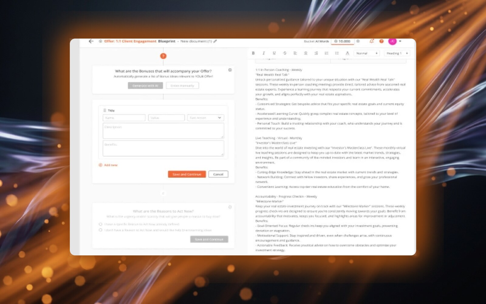

Ideaware · Client: Bucket.io · Sep 2023 – May 2024
AI-Powered Blueprint Generation
Redesigning a complex AI configuration process into an accessible guided funnel, validated through interactive prototyping before engineering investment.

A confusing multi-step AI configuration drove high drop-off in the middle of the funnel.
Journey-mapped the friction, restructured it into a guided funnel, and validated two options via interactive prototypes.
80% of drop-off traced to 3 fixable friction points; shipped without a redesign-driven rework cycle.

- Featured templates kill the blank-page problem
- One primary action per screen; the funnel starts itself
- Categories use the marketer’s vocabulary, not AI jargon
Bucket.io blueprint dashboard: the AI-powered content generation platform I redesigned
Try the Design / Spec toggle
Making AI content creation accessible to non-technical users.
Bucket.io uses AI to automatically generate marketing documents (webinar outlines, enrollment scripts, attraction funnels) based on user inputs. The existing workflow required users to navigate a multi-step configuration process that was confusing, particularly for users without technical backgrounds.
Drop-off rates were high in the middle of the funnel. Users frequently misconfigured parameters, leading to poor AI output quality and frustration.

User journey mapping identified three critical friction points driving 80% of total drop-off
Journey mapping to find the friction. Prototypes to prove the fix.
Journey mapping revealed three critical friction points: blueprint selection (too many options, no guidance), question configuration (unclear what each parameter affected), and result interpretation (no way to refine output without starting over).
Guided funnel redesign. I restructured the flow with clear progress indication. Each step had a single focus: select blueprint type, answer guided questions, review the AI-generated result, then refine or regenerate.
Prototype-driven validation. Before any engineering investment, I delivered high-fidelity interactive prototypes that stakeholders could test with real user scenarios. This accelerated alignment and saved weeks of potential engineering rework.

Wireframes showing the restructured guided funnel: select, configure, generate, refine

Detailed wireframe flow: blueprint selection, guided questions, and AI generation states mapped across 8+ screens
Two design options. One validated through prototyping before a single line of code.
Option A · Guided Simplicity: A linear 4-step funnel optimized for first-time users. Each step had a single focus, contextual help, and inline validation. This option prioritized reducing configuration errors and minimizing time-to-first-output.
Option B · Power Dashboard: A configurable workspace for repeat users who needed more control over parameters. This option exposed advanced settings upfront while maintaining the guided flow as an optional onboarding path.
Both options were delivered as high-fidelity interactive Figma prototypes. Stakeholders tested them with real user scenarios before any engineering investment, a process that prevented weeks of potential rework and accelerated team alignment on the final direction.

Component library: 10+ reusable question types, form states, and AI content panels built for the guided funnel

Redesigned templates view: category-based navigation with organized blueprint grid for faster selection

Integrated help guide: contextual documentation reducing support requests during blueprint creation

Two design options delivered for stakeholder evaluation, validated through interactive prototyping

High-fidelity UI: Option 1 (guided simplicity) vs Option 2 (power dashboard) with live AI-generated content
Leadership & Collaboration
- Stakeholder alignment: Delivered 2 interactive prototypes that stakeholders could evaluate with real scenarios, eliminating ambiguity and accelerating buy-in before engineering investment.
- Cross-functional handoff: Created detailed design specifications with annotated flows, edge cases, and error states so the engineering team could implement without iterative clarification rounds.
- User advocacy: Used journey mapping data to push back on feature requests that would have added complexity to the funnel, defending simplicity with evidence, not opinion.
Reflection.
This project reinforced that the highest-leverage design work often happens before any screen is designed. The journey mapping phase took two weeks, but it saved months of engineering time by ensuring we solved the right problems. If I did this project again, I would have pushed to run a live A/B test between the two design options with real users rather than relying solely on stakeholder evaluation; the data would have made the final decision more defensible.